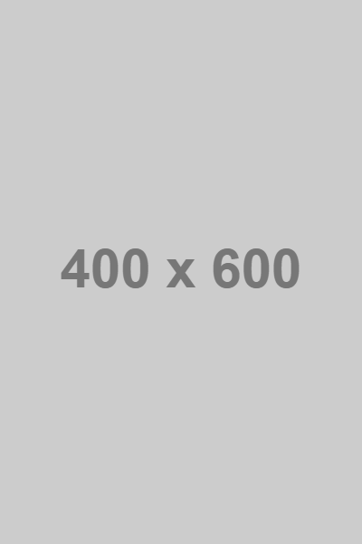

About Me
I’m building my path as a Full Stack Web Developer, one step
at a time.
I like to approach projects with curiosity, method, and
attention to detail, always aiming for simple, clean, and
functional solutions.
I have a solid foundation in HTML, CSS, JavaScript, PHP, SQL,
Bootstrap, WordPress, Git, and I keep improving every day
through study, practice, and small real-world projects.
I believe in continuous growth, clear code, and the ability to
learn quickly. My goal is to become a reliable developer,
capable of turning ideas into real, concrete products.
